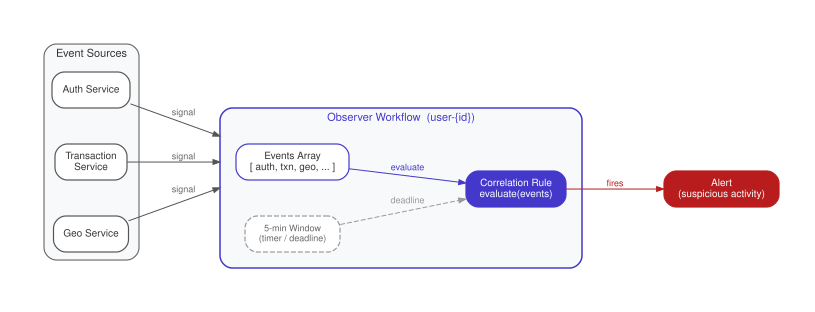

The Durable Observer (Event Correlator)
Collect events from multiple external sources over time inside a durable workflow, maintaining correlation state and acting when a pattern or threshold is detected.
Intent. Multiple events arrive from different sources at unpredictable times. The system must correlate them, maintain running state, and trigger actions when patterns emerge — a combination of events within a time window, a threshold crossed, a sequence detected. The Durable Observer holds correlation state inside a workflow, receives events as external messages (signals), and acts on conditions.
Motivation. A financial services company monitors customer accounts for fraud. No single event is suspicious on its own. A login from a new device is normal — customers get new phones. A $2,000 wire transfer is normal — customers pay rent. But a new-device login followed by a $2,000 wire transfer within five minutes, from a different country than the customer’s usual location, is a pattern that warrants freezing the account and alerting the fraud team.
The challenge is temporal correlation. The events arrive minutes or hours apart, from different services (the authentication service, the transaction processing service, the geolocation service). The fraud rule must "remember" that a device change happened and check whether a large transaction follows within a time window. If the window expires without a matching transaction, the device change is forgotten (or at least deprioritized). If the window is still open and a matching transaction arrives, the alert fires.
This is Complex Event Processing (CEP), a well-studied domain with dedicated engines — Esper, Flink CEP, AWS EventBridge. These systems are powerful but represent significant operational overhead: a streaming infrastructure (Kafka or Kinesis), a CEP runtime, a state backend (RocksDB, Redis), and a deployment pipeline for rule changes. For teams that already run a durable execution platform, implementing simple-to-moderate correlation rules as workflows eliminates the need for a separate streaming stack.
The Pattern

The observer workflow is a long-running workflow identified by a business key — typically an account ID or entity ID. It sits in a loop, receiving events as signals (Temporal’s mechanism for sending data into a running workflow) and accumulating them in local state. Each signal carries event data (type, timestamp, payload) from an external source into the workflow. Inside the signal handler lives the correlation rule — ordinary application logic that evaluates accumulated events against patterns: "device change followed by large transaction within 5 minutes," "three failed login attempts in 10 minutes," or "order total exceeds $50,000 across all orders today." When a rule fires, the workflow acts — freezing an account, sending an alert, or kicking off a downstream activity.
Traditionally, you’d build this with a stream processing pipeline: events flow through a message broker (Kafka, Kinesis) into a processor (Flink, Spark Streaming) that maintains windowed state and evaluates rules against it. The operational cost is substantial — cluster management, state backends, checkpointing, consumer group coordination — all for correlation logic that might fit in a single function. A simpler alternative is polling a database table, but that trades infrastructure complexity for latency and scaling problems.
With Durable Execution. One workflow per monitored account. Events arrive as signals. Correlation rules evaluate in the signal handler:
export async function fraudMonitorWorkflow(accountId: string): Promise<AlertResult> {
const events: FraudEvent[] = [];
let alertTriggered = false;
let alertReason = '';
// Register signal handler for incoming events
setHandler(reportEvent, (event: FraudEvent) => {
events.push(event);
// Correlation rule: new device + large transaction within 5 minutes
const recentDeviceChange = events.find(
(e) =>
e.type === 'device_change' &&
event.timestamp - e.timestamp < 5 * 60 * 1000,
);
if (
event.type === 'transaction' &&
recentDeviceChange &&
(event.details.amount as number) > 1000
) {
alertTriggered = true;
alertReason = `Large transaction ($${event.details.amount}) from new device within 5 minutes`;
}
});
setHandler(getStatus, () => ({
triggered: alertTriggered,
reason: alertReason,
events,
}));
// Wait for alert or monitoring window expiry (24 hours)
await condition(() => alertTriggered, '24h');
return {
triggered: alertTriggered,
reason: alertReason || 'Monitoring window expired without alert',
events,
};
}The fraudMonitorWorkflow starts when an account enters monitoring — a new
customer, a flagged account, or simply every active account. It registers a
signal handler for reportEvent that accumulates events in a local array and
evaluates the correlation rule on each arrival.
The correlation rule is ordinary TypeScript. When a transaction event arrives,
the handler searches the accumulated events for a device_change within the
last 5 minutes. If it finds one, and the transaction amount exceeds $1,000, it
sets alertTriggered to true. The condition() call at the bottom of the
workflow wakes up immediately when alertTriggered becomes true, or after 24
hours if no alert is triggered (the monitoring window expires).
The workflow’s state — the events array, the alertTriggered flag — is
durable by default. If the worker crashes after receiving three events but
before the alert fires, the runtime replays the workflow on another worker. The
signal handler re-processes the three events from history (they’re recorded as
signal events), reconstructs the events array, and continues. No events are
lost, no correlation state is lost.
The getStatus query lets external systems check the current state of the
monitor at any time. An operations dashboard can query all fraud-monitor
workflows to show which accounts are under observation, how many events have
been collected, and whether any alerts have triggered.
Consequences. The Durable Observer replaces streaming infrastructure (Kafka + Flink + state backend) with workflows and signals. For moderate event volumes — tens of events per minute per account, thousands of monitored accounts — this is operationally simpler and uses infrastructure you already run.
The primary constraint is throughput per workflow. A single workflow processes signals sequentially, and Temporal enforces a per-workflow signal rate on the order of a few hundred per second. If an account generates events at that rate or higher (a high-frequency trading account, a real-time IoT sensor), signals will be throttled or the workflow will fall behind. For those volumes, you’ll need either dedicated stream processing or a sharding strategy — one observer workflow per time window or per event partition, with a router directing events to the correct shard.
The events array in the example grows without bound. For a 24-hour monitoring
window on an active account, it could hold thousands of entries. That’s fine
within the payload size limit, but for longer windows or higher volumes, you
should prune events that have fallen outside the correlation window or use
ContinueAsNew (Chapter 8) to periodically compact the history and carry
forward only the relevant events.
Distinction from the Entity. The Durable Observer is structurally similar to the Entity (Chapter 1) — both are long-running workflows that receive signals and maintain state. The distinction is purpose. The Entity models a domain object (a cart, a device, a session) and its signals are commands that mutate its state. The Observer monitors a stream of events and its signals carry observations evaluated against rules. The Entity’s output is its own state; the Observer’s output is an alert or action triggered by a pattern in the input.
Known Applications
-
Fraud detection — correlate login, transaction, and device events per account
-
SLA monitoring — track service response times, alert when thresholds are breached
-
Order tracking — correlate shipment events from multiple carriers
-
IoT alerting — monitor sensor readings, alert on sustained anomalies
-
Multi-party agreement — wait for signatures from all parties within a deadline
Related Patterns